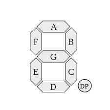

Traktor F1 Teardown & HID Protocol Analysis
One interesting gotcha is that the F1 is a High Speed (480 Mbs) device. Unfortunately that means the cheaper hardware analyzers (<1000 USD) will not work.
USBlyzer is a software USB sniffing solution that has a free 30 day trial and is really easy to use so if anyone wants to sniff USB by themselves it can be found here. Once expired the 30 day trial can be circumvented by changing your calendar.
http://www.usblyzer.com/download.htm
I don’t think the fact that the F1 is a high speed device will prevent us from emulating it using a full speed microcontroller.
This is just a basic analysis, I haven't delved too deeply into the initial configuration of the device. However at this stage it does not appear there is any special handshaking beyond declaring a serial number.
The LEDs of the F1 are set using a single output report with a length of 81 Bytes. All animations including blinking states, and the white line animation displayed when changing banks are controlled by the software. That is a blinking led is turned on by the software, then toggled by the software at a certain interval, rather than being put into a blinking state where the strobing is controlled purely by the F1 hardware.
All leds appear to have some level of brightness control, Traktor allows you to vary the “On State Brightness” and “Dim State Percentage” levels using the configuration menu. All the values listed in this document are for an On state brightness of 100%, and a Dim state Percentage of 0%.
Byte 01 ID (= 80)
Byte 02 .. 17 7-segment displays
Byte 18 .. 25 Small Function Keys
Byte 26 .. 73 RGB Pads
Byte 74 .. 81 Stop Keys
The first byte is always 80.
The next 16 bytes control the 7 segment displays, each byte represents one of the segments. A value of 64 is used when that segment is on, and a zero value when it is off. Bytes 2 - 9 control the right hand digit, and bytes 10 - 17 control the left digit.

The segments are addressed as follows.
Note that the DP actually appears top left of the digit.
Byte 1: DP
Byte 2: Segment G
Byte 3: Segment C
Byte 4: Segment B
Byte 5: Segment A
Byte 6: Segment F
Byte 7: Segment E
Byte 8: Segment D
The next 8 bytes control the brightness of the 8 small functions keys located near the middle of the device.
The full brightness value is 7F, off is 0.
Byte 1 Browse
Byte 2 Size
Byte 3 Type
Byte 4 Reverse
Byte 5 Shift
Byte 6 Capture
Byte 7 Quant
Byte 8 Sync
The next 48 bytes are used to set the color of each of the 16 pads. 3 bytes are used for the RGB color settings of each pad are arranged in BRG order: Blue, Red, Green.
Byte 1 Pad #1 Blue
Byte 2 Pad #1 Red
Byte 3 Pad #1 Green
Byte 4 Pad #2 Blue
Byte 5 Pad #2 Red
Byte 6 Pad #2 Green
…
White is sent as 73 73 73. Each color uses a 7 bit resolution, min (off) = 0, max (100% on) = 0x7D
I will add further information on the color settings later.
There is no buffering of the color states of other banks, the color information is fully refreshed from the host in response a bank change key press.
The next 8 bytes are used to control the brightness of the 4 stop keys at the bottom of the device. Each of these keys uses two leds to provide sufficient illumination along its length, it appears you can control these LEDs separately as each key uses two control bytes.
Byte 74 Column 4 Stop Key LED 1
Byte 75 Column 4 Stop Key LED 2
Byte 76 Column 3 Stop Key LED 1
Byte 77 Column 3 Stop Key LED 2
Byte 78 Column 2 Stop Key LED 1
Byte 79 Column 2 Stop Key LED 2
Byte 80 Column 1 Stop Key LED 1
Byte 81 Column 1 Stop Key LED 2
The state of all input controls is communicated via a single input report of 22 Bytes
The first byte is the version number, currently 0x01
The next two byte contain the bit encoded boolean state of the pads, true = pressed.
Byte 2 Bit 7 (MSB) = Pad 1
Byte 2 Bit 6 = Pad 2
Byte 2 Bit 5 = Pad 3
Byte 2 Bit 4 = Pad 4
Byte 2 Bit 3 = Pad 5
Byte 2 Bit 2 = Pad 6
Byte 2 Bit 1 = Pad 7
Byte 2 Bit 0 = Pad 8
Byte 3 Bit 7 (MSB) = Pad 9
Byte 3 Bit 6 = Pad 10
Byte 3 Bit 5 = Pad 11
Byte 3 Bit 4 = Pad 12
Byte 3 Bit 3 = Pad 13
Byte 3 Bit 2 = Pad 14
Byte 3 Bit 1 = Pad 15
Byte 3 Bit 0 = Pad 16
The boolean state for the other buttons are sent via Byte 4 & Byte 5.
Byte 4 Bit 7 (MSB) = Shift Key
Byte 4 But 6 = Reverse Key
Byte 4 Bit 5 = Type Key
Byte 4 Bit 4 = Size Key
Byte 4 Bit 3 = Browse Key
Byte 4 Bit 2 =
Byte 4 Bit 1 =
Byte 4 Bit 0 =
Byte 5 Bit 7 (MSB) = Kill Key 1
Byte 5 Bit 6 = Kill Key 2
Byte 5 Bit 5 = Kill Key 3
Byte 5 Bit 4 = Kill Key 4
Byte 5 Bit 3 = Sync Key
Byte 5 Bit 2 = Quant Key
Byte 5 Bit 1 = Capture Key
Byte 5 Bit 0 =
The 6th byte contains a wrapped 0..255 value for the rotary encoder. On reset this value is 0, each clockwise step increments the value by 1 up to a maximum of 0xFF (255). Incrementing past 255 results in wrap around to 0 and decrementing through 0 wraps to 255.
The analog inputs are sent using bytes 7 thru 22. Each analog input uses two bytes in little endian format [TODO: check this] The first byte gives the least significant 8 bits of resolution, the second byte contains the most significant 4 bits of the ADC in the lower 4 bits.
ie; a decimal value of 4000, usually represented as 0x0FA0 in hexadecimal will be sent as the byte stream {0xA0, 0x0F}
Construction style is the same as the X1, using the same back panel plastic, with a modified chassis and aluminium front panel.
To disassemble remove 8 screws from the back of the unit, including one covered by a “Warranty Void if Removed” sticker.
Remove the 4 potentiometer caps along with the 4 fader caps and 1 rotary encoder cap.
Now remove the 3 screws which fasten the PCB to the chassis.
The PCB can now be removed from chassis along with the silicon switch actuators, and light mask.
The F1 uses the more expensive high retention force USB connector from Kycon. This connector has been used on the Audio 4, Audio 6, Audio 8, Audio 10, S2, & S4 devices but not on the X1 or Audio 2.
Linear Potentiometer parts are made by Alpha Taiwan and use a felt dust cover which gives them a slightly coarse feel.
Rotary Potentiometer parts are made by Alps, same part used across all Traktor products.
RGB Pad design is uses PLCC-4 Package RGB leds placed within contact housing, similar to how many back-lit tact switches are constructed, but without a lens cap or housing. The switch bodies & LED pins are SMT.
The silicon actuators are formed by a thin sheet of silicon with solid extrusions on one side forming the pad/ dispersion element, and two thin extrusions on the other which contact the PCB when the switch is fully depressed, protecting the contact against excessive force.
The F1 uses an XMOS L1 128 pin microcontroller. NI have used the XMOS multi channel audio reference design across the S2, S4, Audio 6, and Audio 10 devices, and now appear to be using this part on devices with no audio capability. Given its multi threading capabilities it is useful for implementing an RGB display without needing expensive driver chips.
ADC conversion is performed by a National Semiconductor ADC78H90CIMT 8 Channel SPI ADC device.
Buttons are read using 74HC165 parallel in/serial out shift registers
LEDs are driven via 74HC595.